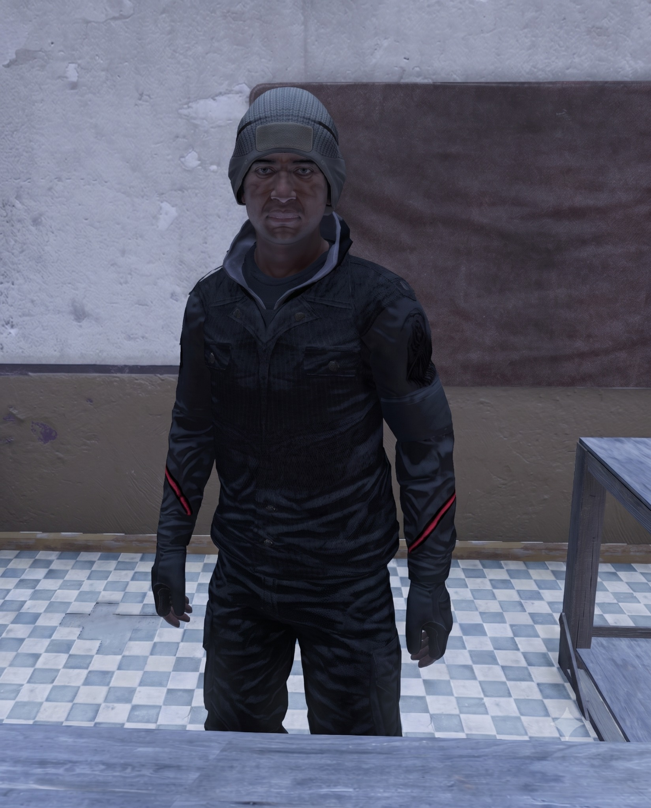

What Indar Buys
- Vanilla melee weapons and items
- My DF Weapons melee weapons
- My DF Weapons guns
Scorched Isle Market's mainland weapons trader. Indar buys vanilla melee weapons and items along with My DF Weapons melee weapons and guns, while selling select lower-tier My DF Weapons guns for survivors looking to get armed without jumping straight to end-game hardware.
Before his name ever appeared in Ember Research Institute records, Indar wore a sheriff's badge.
Surviving municipal records place him in local law enforcement for years before the Institute recruited him. By most accounts he was disciplined, quiet, and unusually difficult to rattle. He knew the surrounding communities, knew their weapons, and knew exactly which doors could be opened with authority and which required something heavier.
What Ember wanted with a county sheriff has never been made clear.
After his recruitment, the paperwork becomes considerably less helpful. One roster lists him under logistics. Another places him beside a sealed weapons-development program. A third has his name blacked out completely.
What is known is that Indar left the Institute before everything finally came apart. Whether he walked away, was pushed out, or was sent somewhere under orders is something he has never explained. He carries no Institute insignia now, and he reacts poorly when anyone asks why.
He does, however, still wear pieces of the old sheriff's uniform. Whether that's nostalgia, habit, or a warning depends on who you ask. There has not been a functioning government in years. Nobody has bothered telling Indar that.
Years later, he surfaced at Scorched Isle Market dealing in weapons. Not ammunition. Not magazines. Not attachments. Weapons themselves. The choice feels deliberate. Some survivors believe he knows exactly which designs trace back to Ember projects. Others think he is quietly collecting anything that might reveal what the Institute was building before the end.
Indar never confirms either theory. He buys, he inspects, and occasionally he refuses a weapon without giving a reason. When that happens, the item usually disappears from his counter faster than the others.
There are whispers that he is not selling starter guns because they are all he can get. He is selling them because they are the only ones he is willing to let leave his hands.
Whatever Indar knows about the Ember Research Institute, he has spent years making sure nobody gets the whole story.
